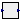

| Name | Description |
|---|---|
| ISA PID controller with anti-windup | |
|  LevelSetPoint |

| Type | Name | Default | Description |
|---|---|---|---|
| Real | Kp | Proportional gain (normalised units) | |
| Time | Ti | Integral time [s] | |
| Time | Td | 0 | Derivative time [s] |
| Real | Nd | 1 | Derivative action up to Nd / Td rad/s |
| Real | Ni | 1 | Ni*Ti is the time constant of anti-windup compensation |
| Real | b | 1 | Setpoint weight on proportional action |
| Real | c | 0 | Setpoint weight on derivative action |
| Real | PVmin | Minimum value of process variable for scaling | |
| Real | PVmax | Maximum value of process variable for scaling | |
| Real | CSmin | Minimum value of control signal for scaling | |
| Real | CSmax | Maximum value of control signal for scaling | |
| Real | PVstart | 0.5 | Start value of PV (scaled) |
| Real | CSstart | 0.5 | Start value of CS (scaled) |
| Boolean | steadyStateInit | false |
| Type | Name | Description |
|---|---|---|
| input RealInput | PV | Process variable signal |
| output RealOutput | CS | Control signal |
| input RealInput | SP | Set point signal |
model PID "ISA PID controller with anti-windup"
parameter Real Kp "Proportional gain (normalised units)";
parameter Time Ti "Integral time";
parameter Time Td = 0 "Derivative time";
parameter Real Nd = 1 "Derivative action up to Nd / Td rad/s";
parameter Real Ni = 1
"Ni*Ti is the time constant of anti-windup compensation";
parameter Real b = 1 "Setpoint weight on proportional action";
parameter Real c = 0 "Setpoint weight on derivative action";
parameter Real PVmin "Minimum value of process variable for scaling";
parameter Real PVmax "Maximum value of process variable for scaling";
parameter Real CSmin "Minimum value of control signal for scaling";
parameter Real CSmax "Maximum value of control signal for scaling";
parameter Real PVstart = 0.5 "Start value of PV (scaled)";
parameter Real CSstart = 0.5 "Start value of CS (scaled)";
parameter Boolean steadyStateInit = false;
Real P "Proportional action / Kp";
Real I(start = CSstart/Kp) "Integral action / Kp";
Real D "Derivative action / Kp";
Real Dx(start = c*PVstart - PVstart) "State of approximated derivator";
Real PVs "Process variable scaled in per unit";
Real SPs "Setpoint variable scaled in per unit";
Real CSs(start = CSstart) "Control signal scaled in per unit";
Real CSbs(start = CSstart)
"Control signal scaled in per unit before saturation";
Real track "Tracking signal for anti-windup integral action";
Modelica.Blocks.Interfaces.RealInput PV "Process variable signal";
Modelica.Blocks.Interfaces.RealOutput CS "Control signal";
Modelica.Blocks.Interfaces.RealInput SP "Set point signal";
equation
// Scaling
SPs=(SP-PVmin)/(PVmax-PVmin);
PVs=(PV-PVmin)/(PVmax-PVmin);
CS = CSmin + CSs*(CSmax-CSmin);
// Controller actions
P = b*SPs - PVs;
if Ti>0 then
Ti*der(I) = SPs - PVs + track;
else
I = 0;
end if;
if Td > 0 then
Td/Nd*der(Dx) + Dx = c*SPs - PVs "State equation of approximated derivator";
D = Nd*((c*SPs - PVs) - Dx) "Output equation of approximated derivator";
else
Dx = 0;
D = 0;
end if;
CSbs = Kp*(P+I+D) "Control signal before saturation";
CSs = smooth(0, if CSbs > 1 then 1 else if CSbs < 0 then 0 else CSbs)
"Saturated control signal";
track = (CSs-CSbs)/(Kp*Ni);
initial equation
if steadyStateInit then
if Ti > 0 then
der(I) = 0;
end if;
if Td > 0 then
D = 0;
end if;
end if;
end PID;

| Type | Name | Default | Description |
|---|---|---|---|
| Pressure | p1 | [Pa] | |
| Pressure | p2 | [Pa] | |
| Length | y1 | [m] | |
| Length | y2 | [m] |
| Type | Name | Description |
|---|---|---|
| input RealInput | drumPressure | |
| output RealOutput | levelSetPoint |
model LevelSetPoint
parameter Pressure p1;
parameter Pressure p2;
parameter Length y1;
parameter Length y2;
Modelica.Blocks.Interfaces.RealInput drumPressure;
Modelica.Blocks.Interfaces.RealOutput levelSetPoint;
equation
levelSetPoint = noEvent(
if drumPressure < p1 then y1 else
if drumPressure > p2 then y2 else y1 + (y2-y1)/(p2-p1)*(drumPressure-p1));
end LevelSetPoint;